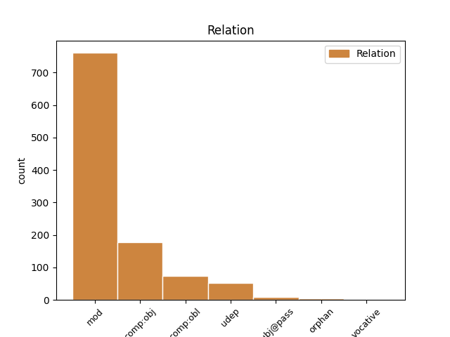
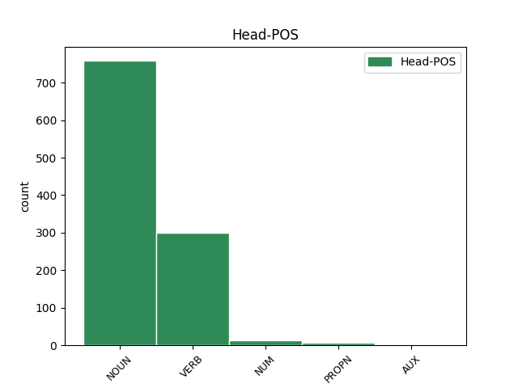
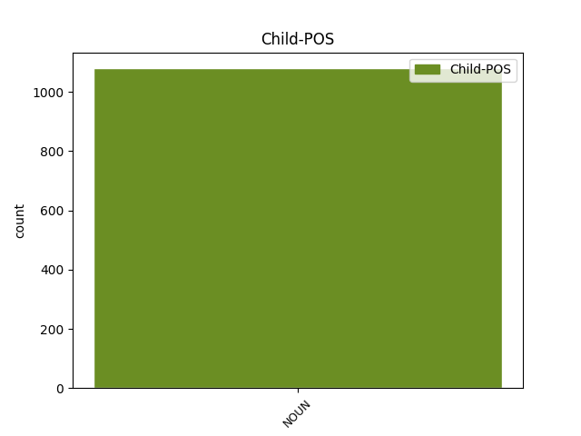

Distribution of features within this leaf



Agreement Rules sorted by frequency.
- When the dependent token is the modifer(mod) of the head token, and the head token is NOUN and the dependent token is NOUN.
1 skal _ _ _ _ 0 _ _ _
2 uþ _ _ _ _ 0 _ _ _
3 þan _ _ _ _ 0 _ _ _
4 aipiskaupus _ _ _ _ 0 _ _ _
5 ungafairinoþs _ _ _ _ 0 _ _ _
6 wisan _ _ _ _ 0 _ _ _
7 swe _ _ _ _ 0 _ _ _
8 gudis guþ NOUN Nb Case=Gen|Gender=Masc|Number=Sing 9 mod _ ref=TIT_1.7
9 fauragaggja fauragaggja NOUN Nb Case=Nom|Gender=Masc|Number=Sing 0 _ _ _
10 ni _ _ _ _ 0 _ _ _
11 hauhhairts _ _ _ _ 0 _ _ _
12 ni _ _ _ _ 0 _ _ _
13 þwairhs _ _ _ _ 0 _ _ _
14 ni _ _ _ _ 0 _ _ _
15 weinnas _ _ _ _ 0 _ _ _
16 ni _ _ _ _ 0 _ _ _
17 slahals _ _ _ _ 0 _ _ _
18 ni _ _ _ _ 0 _ _ _
19 aglaitgastalds _ _ _ _ 0 _ _ _
20 ak _ _ _ _ 0 _ _ _
21 gastigods _ _ _ _ 0 _ _ _
22 bleiþs _ _ _ _ 0 _ _ _
23 andaþahts _ _ _ _ 0 _ _ _
24 garaihts _ _ _ _ 0 _ _ _
25 weihs _ _ _ _ 0 _ _ _
26 gaþaurbs _ _ _ _ 0 _ _ _
27 waurdis _ _ _ _ 0 _ _ _
28 triggws _ _ _ _ 0 _ _ _
29 ei _ _ _ _ 0 _ _ _
30 mahteigs _ _ _ _ 0 _ _ _
31 sijai _ _ _ _ 0 _ _ _
32 jah _ _ _ _ 0 _ _ _
33 gaþlaihan _ _ _ _ 0 _ _ _
34 in _ _ _ _ 0 _ _ _
35 laiseinai _ _ _ _ 0 _ _ _
36 hailai _ _ _ _ 0 _ _ _
37 jaþ _ _ _ _ 0 _ _ _
38 þans _ _ _ _ 0 _ _ _
39 andstandandans _ _ _ _ 0 _ _ _
40 gasakan _ _ _ _ 0 _ _ _
1 Aþþan _ _ _ _ 0 _ _ _
2 þata _ _ _ _ 0 _ _ _
3 kunneis _ _ _ _ 0 _ _ _
4 ei _ _ _ _ 0 _ _ _
5 in _ _ _ _ 0 _ _ _
6 spedistaim _ _ _ _ 0 _ _ _
7 dagam _ _ _ _ 0 _ _ _
8 atgaggand _ _ _ _ 0 _ _ _
9 jera _ _ _ _ 0 _ _ _
10 sleidja _ _ _ _ 0 _ _ _
11 jah _ _ _ _ 0 _ _ _
12 wairþand _ _ _ _ 0 _ _ _
13 mannans _ _ _ _ 0 _ _ _
14 sik _ _ _ _ 0 _ _ _
15 frijondans _ _ _ _ 0 _ _ _
16 faihugairnai _ _ _ _ 0 _ _ _
17 bihaitjans _ _ _ _ 0 _ _ _
18 hauhhairtai _ _ _ _ 0 _ _ _
19 wajamerjandans _ _ _ _ 0 _ _ _
20 fadreinam _ _ _ _ 0 _ _ _
21 ungaƕairbai _ _ _ _ 0 _ _ _
22 launawargos _ _ _ _ 0 _ _ _
23 unairknans _ _ _ _ 0 _ _ _
24 unhunslagai _ _ _ _ 0 _ _ _
25 unmildjai _ _ _ _ 0 _ _ _
26 fairinondans _ _ _ _ 0 _ _ _
27 ungahabandans _ _ _ _ 0 _ _ _
28 sik _ _ _ _ 0 _ _ _
29 unmanarigwai _ _ _ _ 0 _ _ _
30 unseljai _ _ _ _ 0 _ _ _
31 fralewjandans _ _ _ _ 0 _ _ _
32 untilamalskai _ _ _ _ 0 _ _ _
33 ufbaulidai _ _ _ _ 0 _ _ _
34 frijondans frijon VERB V- Case=Nom|Gender=Masc|Number=Plur|Strength=Weak|Tense=Pres|VerbForm=Part|Voice=Act 0 _ _ _
35 wiljan wilja NOUN Nb Case=Acc|Gender=Masc|Number=Sing 34 comp:obj _ ref=2TIM_3.4
36 seinana _ _ _ _ 0 _ _ _
37 mais _ _ _ _ 0 _ _ _
38 þau _ _ _ _ 0 _ _ _
39 guþ _ _ _ _ 0 _ _ _
40 habandans _ _ _ _ 0 _ _ _
41 hiwi _ _ _ _ 0 _ _ _
42 gagudeins _ _ _ _ 0 _ _ _
43 iþ _ _ _ _ 0 _ _ _
44 maht _ _ _ _ 0 _ _ _
45 izos _ _ _ _ 0 _ _ _
46 inwidandans _ _ _ _ 0 _ _ _
1 ni _ _ _ _ 0 _ _ _
2 ainshun _ _ _ _ 0 _ _ _
3 drauhtinonds drauhtinon VERB V- Case=Nom|Gender=Masc|Number=Sing|Strength=Strong|Tense=Pres|VerbForm=Part|Voice=Act 0 _ _ _
4 fraujin frauja NOUN Nb Case=Dat|Gender=Masc|Number=Sing 3 comp:obl _ ref=2TIM_2.4
5 dugawindiþ _ _ _ _ 0 _ _ _
6 sik _ _ _ _ 0 _ _ _
7 gawaurkjam _ _ _ _ 0 _ _ _
8 þizos _ _ _ _ 0 _ _ _
9 aldais _ _ _ _ 0 _ _ _
10 ei _ _ _ _ 0 _ _ _
11 galeikai _ _ _ _ 0 _ _ _
12 þammei _ _ _ _ 0 _ _ _
13 drauhtinoþ _ _ _ _ 0 _ _ _
1 aþþan _ _ _ _ 0 _ _ _
2 þamma _ _ _ _ 0 _ _ _
3 haidau _ _ _ _ 0 _ _ _
4 ei _ _ _ _ 0 _ _ _
5 Jannes _ _ _ _ 0 _ _ _
6 jah _ _ _ _ 0 _ _ _
7 Mamres _ _ _ _ 0 _ _ _
8 andstoþun _ _ _ _ 0 _ _ _
9 Moseza _ _ _ _ 0 _ _ _
10 swa _ _ _ _ 0 _ _ _
11 jah _ _ _ _ 0 _ _ _
12 þai _ _ _ _ 0 _ _ _
13 andstandand _ _ _ _ 0 _ _ _
14 sunjai _ _ _ _ 0 _ _ _
15 mannans _ _ _ _ 0 _ _ _
16 frawaurþanai fra-wairþan VERB V- Aspect=Perf|Case=Nom|Gender=Masc|Number=Plur|Strength=Strong|Tense=Past|VerbForm=Part|Voice=Pass 0 _ _ _
17 ahin aha NOUN Nb Case=Dat|Gender=Masc|Number=Sing 16 udep _ ref=2TIM_3.8
18 uskusanai _ _ _ _ 0 _ _ _
19 bi _ _ _ _ 0 _ _ _
20 galaubein _ _ _ _ 0 _ _ _
1 qaþ _ _ _ _ 0 _ _ _
2 ains ains NUM Ma Case=Nom|Gender=Masc|Number=Sing 0 _ _ _
3 þize _ _ _ _ 0 _ _ _
4 siponje siponeis NOUN Nb Case=Gen|Gender=Masc|Number=Plur 2 mod _ ref=JOHN_6.8
5 is _ _ _ _ 0 _ _ _
6 Andraias _ _ _ _ 0 _ _ _
7 broþar _ _ _ _ 0 _ _ _
8 Paitraus _ _ _ _ 0 _ _ _
9 Seimonaus _ _ _ _ 0 _ _ _
1 þizeei _ _ _ _ 0 _ _ _
2 ist _ _ _ _ 0 _ _ _
3 Wmainaius _ _ _ _ 0 _ _ _
4 jah _ _ _ _ 0 _ _ _
5 Filetus _ _ _ _ 0 _ _ _
6 þaiei _ _ _ _ 0 _ _ _
7 bi _ _ _ _ 0 _ _ _
8 sunjai _ _ _ _ 0 _ _ _
9 uswissai _ _ _ _ 0 _ _ _
10 usmetun _ _ _ _ 0 _ _ _
11 qiþandans _ _ _ _ 0 _ _ _
12 usstass usstass NOUN Nb Case=Acc|Gender=Fem|Number=Sing 14 subj@pass _ ref=2TIM_2.18
13 ju _ _ _ _ 0 _ _ _
14 waurþana wairþan VERB V- Aspect=Perf|Case=Acc|Gender=Fem|Number=Sing|Strength=Strong|Tense=Past|VerbForm=Part|Voice=Pass 0 _ _ _
15 jah _ _ _ _ 0 _ _ _
16 galaubein _ _ _ _ 0 _ _ _
17 sumaize _ _ _ _ 0 _ _ _
18 uswaltidedun _ _ _ _ 0 _ _ _
1 aþþan _ _ _ _ 0 _ _ _
2 weis _ _ _ _ 0 _ _ _
3 broþrjus _ _ _ _ 0 _ _ _
4 bi _ _ _ _ 0 _ _ _
5 Isakis _ _ _ _ 0 _ _ _
6 gahaita gahait NOUN Nb Case=Dat|Gender=Neut|Number=Sing 7 comp:obl _ ref=GAL_4.28
7 barna barn NOUN Nb Case=Nom|Gender=Neut|Number=Plur 0 _ _ _
8 sium _ _ _ _ 0 _ _ _
1 Pawlus _ _ _ _ 0 _ _ _
2 skalks _ _ _ _ 0 _ _ _
3 gudis _ _ _ _ 0 _ _ _
4 iþ _ _ _ _ 0 _ _ _
5 apaustaulus _ _ _ _ 0 _ _ _
6 Iesuis _ _ _ _ 0 _ _ _
7 Xristaus _ _ _ _ 0 _ _ _
8 bi _ _ _ _ 0 _ _ _
9 galaubeinai _ _ _ _ 0 _ _ _
10 gawalidaize ga-waljan VERB V- Aspect=Perf|Case=Gen|Gender=Masc|Number=Plur|Strength=Strong|Tense=Past|VerbForm=Part|Voice=Pass 0 _ _ _
11 gudis guþ NOUN Nb Case=Gen|Gender=Masc|Number=Sing 10 mod _ ref=TIT_1.1
12 jah _ _ _ _ 0 _ _ _
13 ufkunþja _ _ _ _ 0 _ _ _
14 sunjos _ _ _ _ 0 _ _ _
15 sei _ _ _ _ 0 _ _ _
16 bi _ _ _ _ 0 _ _ _
17 gagudein _ _ _ _ 0 _ _ _
18 ist _ _ _ _ 0 _ _ _
19 du _ _ _ _ 0 _ _ _
20 wenai _ _ _ _ 0 _ _ _
21 libainais _ _ _ _ 0 _ _ _
22 aiweinons _ _ _ _ 0 _ _ _
23 þoei _ _ _ _ 0 _ _ _
24 gahaihait _ _ _ _ 0 _ _ _
25 unliugands _ _ _ _ 0 _ _ _
26 guþ _ _ _ _ 0 _ _ _
27 faur _ _ _ _ 0 _ _ _
28 mela _ _ _ _ 0 _ _ _
29 aiweina _ _ _ _ 0 _ _ _
30 iþ _ _ _ _ 0 _ _ _
31 ataugida _ _ _ _ 0 _ _ _
32 mela _ _ _ _ 0 _ _ _
33 swesamma _ _ _ _ 0 _ _ _
34 waurd _ _ _ _ 0 _ _ _
35 sein _ _ _ _ 0 _ _ _
36 in _ _ _ _ 0 _ _ _
37 mereinai _ _ _ _ 0 _ _ _
38 sei _ _ _ _ 0 _ _ _
39 gatrauaida _ _ _ _ 0 _ _ _
40 ist _ _ _ _ 0 _ _ _
41 mis _ _ _ _ 0 _ _ _
42 bi _ _ _ _ 0 _ _ _
43 anabusnai _ _ _ _ 0 _ _ _
44 nasjandis _ _ _ _ 0 _ _ _
45 unsaris _ _ _ _ 0 _ _ _
46 gudis _ _ _ _ 0 _ _ _
47 Teitau _ _ _ _ 0 _ _ _
48 walisin _ _ _ _ 0 _ _ _
49 barna _ _ _ _ 0 _ _ _
50 bi _ _ _ _ 0 _ _ _
51 gamainjai _ _ _ _ 0 _ _ _
52 galaubeinai _ _ _ _ 0 _ _ _
1 jah _ _ _ _ 0 _ _ _
2 swa _ _ _ _ 0 _ _ _
3 managai _ _ _ _ 0 _ _ _
4 swe _ _ _ _ 0 _ _ _
5 þizai _ _ _ _ 0 _ _ _
6 garaideinai _ _ _ _ 0 _ _ _
7 galaistans _ _ _ _ 0 _ _ _
8 sind _ _ _ _ 0 _ _ _
9 gawairþi _ _ _ _ 0 _ _ _
10 ana _ _ _ _ 0 _ _ _
11 im _ _ _ _ 0 _ _ _
12 jah _ _ _ _ 0 _ _ _
13 armaio _ _ _ _ 0 _ _ _
14 jah _ _ _ _ 0 _ _ _
15 ana _ _ _ _ 0 _ _ _
16 Israela Israel PROPN Ne Case=Dat|Gender=Masc|Number=Sing 0 _ _ _
17 gudis guþ NOUN Nb Case=Gen|Gender=Masc|Number=Sing 16 mod _ ref=GAL_6.16
1 ni _ _ _ _ 0 _ _ _
2 auk _ _ _ _ 0 _ _ _
3 skulun _ _ _ _ 0 _ _ _
4 barna _ _ _ _ 0 _ _ _
5 fadreinam _ _ _ _ 0 _ _ _
6 huzdjan _ _ _ _ 0 _ _ _
7 ak _ _ _ _ 0 _ _ _
8 fadreina fadrein NOUN Nb Case=Nom|Gender=Neut|Number=Plur 0 _ _ _
9 barnam barn NOUN Nb Case=Dat|Gender=Neut|Number=Plur 8 orphan _ ref=2COR_12.14
1 so _ _ _ _ 0 _ _ _
2 goleins goleins NOUN Nb Case=Nom|Gender=Fem|Number=Sing 0 _ _ _
3 meinai _ _ _ _ 0 _ _ _
4 handau handus NOUN Nb Case=Dat|Gender=Fem|Number=Sing 2 udep _ ref=2THESS_3.17
5 Pawlaus _ _ _ _ 0 _ _ _
6 þatei _ _ _ _ 0 _ _ _
7 ist _ _ _ _ 0 _ _ _
8 bandwo _ _ _ _ 0 _ _ _
9 ana _ _ _ _ 0 _ _ _
10 allaim _ _ _ _ 0 _ _ _
11 aipistaulem _ _ _ _ 0 _ _ _
12 meinaim _ _ _ _ 0 _ _ _
1 wulþus wulþus NOUN Nb Case=Nom|Gender=Masc|Number=Sing 0 _ _ _
2 þus _ _ _ _ 0 _ _ _
3 weiha _ _ _ _ 0 _ _ _
4 guþ guþ NOUN Nb Case=Voc|Gender=Masc|Number=Sing 1 vocative _ ref=MARK_Explicit.0
1 aþþan _ _ _ _ 0 _ _ _
2 manne _ _ _ _ 0 _ _ _
3 sums _ _ _ _ 0 _ _ _
4 was _ _ _ _ 0 _ _ _
5 gabigs _ _ _ _ 0 _ _ _
6 jah _ _ _ _ 0 _ _ _
7 gawasids _ _ _ _ 0 _ _ _
8 was _ _ _ _ 0 _ _ _
9 paurpaurai _ _ _ _ 0 _ _ _
10 jah _ _ _ _ 0 _ _ _
11 bwssaun _ _ _ _ 0 _ _ _
12 jah _ _ _ _ 0 _ _ _
13 waila _ _ _ _ 0 _ _ _
14 wisands wisan AUX V- Case=Nom|Gender=Masc|Number=Sing|Strength=Strong|Tense=Pres|VerbForm=Part|Voice=Act 0 _ _ _
15 daga dags NOUN Nb Case=Dat|Gender=Masc|Number=Sing 14 udep _ ref=LUKE_16.19
16 ƕammeh _ _ _ _ 0 _ _ _
17 bairhtaba _ _ _ _ 0 _ _ _
1 þaruh _ _ _ _ 0 _ _ _
2 anakumbidedun _ _ _ _ 0 _ _ _
3 wairos _ _ _ _ 0 _ _ _
4 raþjon raþjo NOUN Nb Case=Dat|Gender=Fem|Number=Sing 7 udep _ ref=JOHN_6.10
5 swaswe _ _ _ _ 0 _ _ _
6 fimf _ _ _ _ 0 _ _ _
7 þusundjos þūsundi NUM Ma Case=Nom|Gender=Fem|Number=Plur 0 _ _ _
1 daga _ _ _ _ 0 _ _ _
2 ƕammeh _ _ _ _ 0 _ _ _
3 gaswiltandans ga-swiltan VERB V- Case=Nom|Gender=Masc|Number=Plur|Strength=Weak|Tense=Pres|VerbForm=Part|Voice=Act 0 _ _ _
4 in _ _ _ _ 0 _ _ _
5 izwaraizos _ _ _ _ 0 _ _ _
6 ƕoftuljos _ _ _ _ 0 _ _ _
7 broþrjus broþar NOUN Nb Case=Voc|Gender=Masc|Number=Plur 3 vocative _ ref=1COR_15.31
8 þoei _ _ _ _ 0 _ _ _
9 haba _ _ _ _ 0 _ _ _
10 in _ _ _ _ 0 _ _ _
11 Xristau _ _ _ _ 0 _ _ _
12 Iesu _ _ _ _ 0 _ _ _
13 fraujin _ _ _ _ 0 _ _ _
14 unsaramma _ _ _ _ 0 _ _ _
Disagree Examples:
1 jah _ _ _ _ 0 _ _ _
2 gasaiƕands ga-saiƕan VERB V- Case=Nom|Gender=Masc|Number=Sing|Strength=Strong|Tense=Pres|VerbForm=Part|Voice=Act 0 _ _ _
3 Iesus _ _ _ _ 0 _ _ _
4 galaubein galaubeins NOUN Nb Case=Acc|Gender=Fem|Number=Sing 2 comp:obj _ ref=MATT_9.2
5 ize _ _ _ _ 0 _ _ _
6 qaþ _ _ _ _ 0 _ _ _
7 du _ _ _ _ 0 _ _ _
8 þamma _ _ _ _ 0 _ _ _
9 usliþin _ _ _ _ 0 _ _ _
1 jah _ _ _ _ 0 _ _ _
2 witands witan VERB V- Case=Nom|Gender=Masc|Number=Sing|Strength=Strong|Tense=Pres|VerbForm=Part|Voice=Act 0 _ _ _
3 Iesus _ _ _ _ 0 _ _ _
4 þos _ _ _ _ 0 _ _ _
5 mitonins mitons NOUN Nb Case=Acc|Gender=Fem|Number=Plur 2 comp:obj _ ref=MATT_9.4
6 ize _ _ _ _ 0 _ _ _
7 qaþ _ _ _ _ 0 _ _ _
1 gasaiƕandeins _ _ _ _ 0 _ _ _
2 þan _ _ _ _ 0 _ _ _
3 manageins _ _ _ _ 0 _ _ _
4 ohtedun _ _ _ _ 0 _ _ _
5 sildaleikjandans _ _ _ _ 0 _ _ _
6 jah _ _ _ _ 0 _ _ _
7 mikilidedun _ _ _ _ 0 _ _ _
8 guþ _ _ _ _ 0 _ _ _
9 þana _ _ _ _ 0 _ _ _
10 gibandan giban VERB V- Case=Acc|Gender=Masc|Number=Sing|Strength=Weak|Tense=Pres|VerbForm=Part|Voice=Act 0 _ _ _
11 waldufni waldufni NOUN Nb Case=Acc|Gender=Neut|Number=Sing 10 comp:obj _ ref=MATT_9.8
12 swaleikata _ _ _ _ 0 _ _ _
13 mannam _ _ _ _ 0 _ _ _
1 ni _ _ _ _ 0 _ _ _
2 þaurbun _ _ _ _ 0 _ _ _
3 hailai _ _ _ _ 0 _ _ _
4 lekeis _ _ _ _ 0 _ _ _
5 ak _ _ _ _ 0 _ _ _
6 þai _ _ _ _ 0 _ _ _
7 unhaili unhaili NOUN Nb Case=Acc|Gender=Neut|Number=Sing 8 comp:obj _ ref=MATT_9.12
8 habandans haban VERB V- Case=Nom|Gender=Masc|Number=Plur|Strength=Weak|Tense=Pres|VerbForm=Part|Voice=Act 0 _ _ _
1 jah _ _ _ _ 0 _ _ _
2 sai _ _ _ _ 0 _ _ _
3 qino _ _ _ _ 0 _ _ _
4 bloþarinnandei bloþarinnandei VERB V- Case=Nom|Gender=Fem|Number=Sing|Strength=Weak|Tense=Pres|VerbForm=Part|Voice=Act 0 _ _ _
5 ·ib· _ _ _ _ 0 _ _ _
6 wintruns wintrus NOUN Nb Case=Acc|Gender=Masc|Number=Plur 4 udep _ ref=MATT_9.20
7 duatgaggandei _ _ _ _ 0 _ _ _
8 aftaro _ _ _ _ 0 _ _ _
9 attaitok _ _ _ _ 0 _ _ _
10 skauta _ _ _ _ 0 _ _ _
11 wastjos _ _ _ _ 0 _ _ _
12 is _ _ _ _ 0 _ _ _